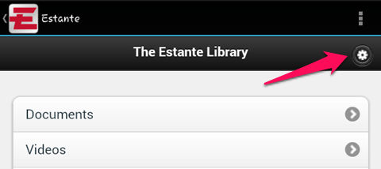
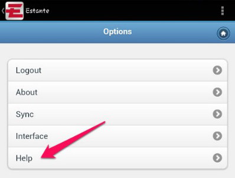
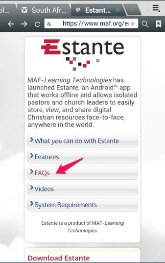

How can I get additional help with Estante?
Estante comes with built-in help videos and written instructions. The Estante web page maf.org/estante also has additional instructions. If you are not able to find an answer to your question in these two places, the Estante web page has a link to the Estante Users Google Group where you can post your question and developers or other Estante users can respond.
Instructions
Where to find Help on your device
- On the Estante home screen, tap the gear icon in the upper right.
- Under Options, choose Help. This will bring up a list of help items. Tap on the topic you are interested in learning more information about.
Where to find Help on the Estante web page maf.org/estante
- On the Estante web page, tap to open the FAQ section. This will bring up a list of help items. Tap on the topic you are interested in learning more information about.
- If your question still hasn’t been answered, you can join the Estante Users Google Group and review the discussions happening there. The link to the group is: https://groups.google.com/forum/#!forum/estante-users
- If current discussion topics do not cover your question, please subscribe to the group so you can post a new discussion topic. Subscribe by email by sending an email to this address: estante-users+subscribe@googlegroups.com
Note: You may submit a question, but it may not appear on the forum immediately, as your first post will be reviewed to ensure it is not spam. Only the first post is reviewed, all others will be posted immediately.
Instructions with screen shots
Where to find Help on your device
- On the Estante home screen, tap the gear icon in the upper right.

- Under Options, choose Help. This will bring up a list of help items. Tap on the topic you are interested in learning more information about.

Where to find Help on the Estante web page maf.org/estante
- On the Estante web page, tap to open the FAQ section. This will bring up a list of help items. Tap on the topic you are interested in learning more information about.

- If your question still hasn’t been answered, you can join the Estante Users Google Group and review the discussions going on there. The link to the group is: https://groups.google.com/forum/#!forum/estante-users
- If current discussion topics do not cover your question, please subscribe to the group so you can post a new discussion topic. Subscribe by email by sending an email to this address: estante-users+subscribe@googlegroups.com
Note: You may submit a question, but it may not appear on the forum immediately, as your first post will be reviewed to ensure it is not spam. Only the first post is reviewed, all others will be posted immediately.